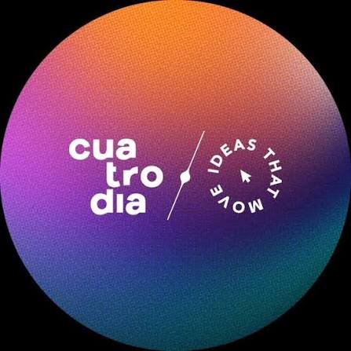

Kian Tangguh Prawiraguna, S.Kom., Gr.
Menjembatani keahlian infrastruktur IT industri telekomunikasi (PT. Digital Satellite Indonesia) dan agensi kreatif (Cuatrodia) ke dalam ruang vokasi modern. Berdedikasi mencetak talenta network engineer berdaya saing global sebagai Guru Kejuruan TJKT & Ketua BKK di SMKS Cyber Media Jakarta serta MikroTik Certified Academy Trainer.
Menghubungkan Dunia Pendidikan Vokasi & Industri Jaringan
Kombinasi keahlian teknis jaringan komputer (*hard skills*) dan dedikasi pedagogis (*teaching expertise*) untuk mencetak calon-calon network engineer andal masa depan.
Pendidik Kejuruan IT & MikroTik Academy Trainer
Sebagai guru full-time di SMK Cyber Media Jakarta, saya bertanggung jawab dalam penyelenggaraan kurikulum kejuruan Teknik Jaringan Komputer dan Telekomunikasi (TJKT) berbasis kebutuhan industri. Sekaligus mengemban amanah sebagai MikroTik Certified Academy Trainer (ACTR-2192) untuk melatih, menguji, dan mensertifikasi siswa secara internasional.
Routing & Switching Lab
Perancangan dan pengelolaan topologi lab praktikum: static routing, dynamic routing (OSPF, BGP), VLAN switching 802.1Q, DHCP relay, dan tunneling.
Pembimbing Kompetisi Teknologi
Mendampingi dan membimbing tim siswa dalam ajang kompetisi sains & inovasi teknologi tingkat nasional seperti Samsung Solve for Tomorrow dan LKS.
Manajemen & Keamanan Jaringan
Implementasi firewall filter rules, bandwidth management (Queue Tree/PCQ), VPN site-to-site, dan pengamanan akses hotspot sekolah.
Kisah Nyata: Dari Garda Depan IT Support hingga Ruang Kelas
Pengalaman nyata di industri telekomunikasi satelit, dukungan infrastruktur agency kreatif, hingga mendedikasikan ilmu sebagai guru dan Ketua BKK.
PT. Digital Satellite Indonesia (Digigroup Telecom Services)
"Bekerja di PT. Digital Satellite Indonesia adalah kawah candradimuka saya di industri telekomunikasi sesungguhnya. Di sini, IT Support bukan sekadar merestart komputer, melainkan menjaga denyut nadi konektivitas pelanggan korporat yang bertumpu pada transmisi satelit dan data link. Saya bertugas merespons eskalasi gangguan klien secara 24/7 melalui panggilan telepon, tiket, dan email—menenangkan klien di saat kritis dan bergerak cepat melakukan diagnosa awal.
Tanggung jawab saya mencakup penyusunan dokumen operasional berkekuatan hukum kontrak: Maintenance Notifications sebelum jadwal pemeliharaan, Incident Reports berkala, serta dokumen Reason for Outage (RFO) pasca-insiden yang menuntut analisis akar masalah (*Root Cause Analysis*) presisi. Di sisi teknisi lapangan (*On-site Technician*), saya turun langsung menangani rak perangkat jaringan Cisco Networking, penggantian modul hardware, pengujian konektivitas link, dan penataan kabel rak server. Pengalaman ini membentuk mentalitas saya: tenang di bawah tekanan tinggi, disiplin dalam dokumentasi, dan teliti hingga ke detail terkecil."
Mengemban dua tanggung jawab strategis: sebagai Help Desk Support (analisis tiket, eskalasi insiden, penyusunan RFO) dan IT Support Technician (troubleshooting perangkat Cisco, hardware, dan link telekomunikasi on-site).
- Menangani keluhan teknis pelanggan korporat via call, chat, dan ticketing system dengan SLA response time terukur.
- Menyusun dokumen teknis: Maintenance Notifications, Incident Reports, dan Reason for Outage (RFO) untuk klien B2B.
- Melakukan instalasi, konfigurasi, dan pemeliharaan hardware switch/router Cisco serta perangkat transmisi data satelit.
- Pemantauan status kesehatan link jaringan (*Daily Monitoring Log*) untuk mencegah terjadinya outage tak terduga.

Cuatrodia Creative Circle — Pasar Minggu, Jakarta
"Di industri agensi kreatif, aset digital adalah nyawa bisnis. Tantangan terbesar tim kreatif adalah perpindahan file raksasa (video 4K, rendering 3D, dan master design) tanpa hambatan (*bottleneck*). Sebagai IT Support freelance di Cuatrodia Creative Circle, fokus utama saya adalah merancang dan memelihara Network Services serta penyimpanan terpusat berbasis Synology NAS.
Saya mengonfigurasi skema RAID redundan, manajemen hak akses folder berbasis peran, bandwidth QoS jaringan lokal agar transfer file tim video tidak mengganggu operasional tim lainnya, serta sistem backup berkala otomatis. Ketika tim kreatif dapat bekerja mulus dari studio maupun remote tanpa takut kehilangan data, itulah kebahagiaan seorang IT Support."
Dukungan teknis menyeluruh untuk studio kreatif: pemeliharaan Network Services, konfigurasi dan manajemen storage server Synology NAS, serta penanganan insiden perangkat IT tim.
- Implementasi dan maintenance server Synology NAS untuk alur kerja kolaborasi file skala besar tim kreatif.
- Optimasi jaringan lokal (LAN/WLAN) untuk menjamin transfer data berkecepatan tinggi antar-workstation.
- Setup backup otomatis terjadwal untuk mencegah data loss aset-aset proyek penting agensi.
SMKS Cyber Media Jakarta
"Menjadi guru bukan sekadar mengajar di kelas, melainkan memastikan siswa memiliki masa depan yang jelas setelah lulus. Pengalaman nyata saya di dunia IT Support dan jaringan telekomunikasi saya bawa langsung ke laboratorium: mengajarkan konfigurasi hardware komputer riil dan Cisco Networking sesuai standar industri.
Sebagai Ketua Bursa Kerja Khusus (BKK), saya bertindak sebagai jembatan penghubung antara sekolah dengan dunia industri (DUDI). Saya aktif membangun kemitraan strategis dengan institusi teknologi terkemuka (seperti kolaborasi bersama Brainmatics dan perusahaan IT lainnya), menyelenggarakan program magang, serta mengawal rekrutmen kerja bagi para lulusan. Momen melihat siswa yang dulunya ragu kini berhasil menandatangani kontrak kerja pertama mereka di industri IT adalah kebanggaan terbesar dalam hidup saya."
Mengajar kompetensi kejuruan Cisco Networking & Computer Hardware, sekaligus memimpin Bursa Kerja Khusus (BKK) untuk penyaluran lulusan ke dunia kerja industri.
- Mengajar mata pelajaran keahlian: Cisco Networking, Computer Hardware, dan Administrasi Jaringan.
- Menjabat sebagai Ketua BKK: memfasilitasi kemitraan industri, penyaluran magang, dan rekrutmen kerja lulusan (termasuk kolaborasi Brainmatics).
- Menyelenggarakan pelatihan persiapan karir, simulasi interview teknis, dan sertifikasi keahlian bagi siswa tingkat akhir.
MikroTik Academy — SMKS Cyber Media Jakarta
"Saya ingin siswa memiliki sertifikat yang diakui tidak hanya di Jakarta, tapi di seluruh dunia. Dengan memegang sertifikat lisensi ACTR-2192 langsung dari Mikrotikls SIA (Riga, Latvia), saya mendirikan kelas resmi MikroTik Academy. Di sini, siswa dilatih menangani RouterOS v7, dynamic routing OSPF/BGP, dan keamanan jaringan secara intensif hingga mereka berhasil lulus sertifikasi MTCNA dengan bangga."
Pelatihan sertifikasi internasional MTCNA (*MikroTik Certified Network Associate*) terstruktur berbasis hands-on lab RouterOS.
- Melatih dan mensertifikasi ratusan siswa dengan kurikulum internasional resmi dari Mikrotikls SIA.
- Membekali lulusan dengan sertifikat kompetensi global yang menjadi nilai tawar unggul saat melamar pekerjaan di industri networking.
Pendidikan Tinggi & Sertifikasi Pendidik Profesional
"Menyelesaikan studi Sarjana Komputer (S.Kom.) dan Program Pendidikan Profesi Guru (PPG) Kemendikbudristek hingga meraih gelar kehormatan Gr. (Guru Profesional) adalah komitmen saya untuk selalu menyajikan standar pengajaran berkualitas tinggi yang berakar pada pengalaman industri nyata."
- Pendidikan Profesi Guru (PPG) — Gelar: Gr. dari Kemendikbudristek RI (Bidang Keahlian: Teknik Komputer & Informatika).
- Sarjana Komputer (S.Kom.) — Menempuh pendidikan strata satu (S1) bidang ilmu komputer, sistem jaringan, dan perangkat keras.
Keahlian Teknis & Pedagogis
Penguasaan menyeluruh ekosistem jaringan komputer enterprise, administrasi RouterOS, serta metodologi transfer keilmuan kejuruan.
MikroTik & Core Routing
Konfigurasi mendalam RouterOS untuk skala lab hingga distribusi jaringan.
Pedagogi & Pelatihan Vokasi
Instruksi kejuruan, kurikulum berbasis lab, dan bimbingan sertifikasi.
Network Security & Switching
Segmentasi jaringan lokal dan pertahanan perimeter keamanan.
Perangkat & Ekosistem Alat
Alat software & hardware yang rutin digunakan dalam kegiatan instruksi & lab.
Sertifikasi & Kredensial Pendidik
Kredensial dan lisensi resmi dari Mikrotikls SIA (Latvia) serta Kementerian Pendidikan, Kebudayaan, Riset, dan Teknologi RI (Kemendikbudristek) sebagai trainer internasional dan guru vokasi profesional.
MikroTik Certified Academy Trainer
Mikrotikls SIA (Riga, Latvia)
MikroTik Certified Routing Engineer
Mikrotikls SIA (Riga, Latvia)
MikroTik Certified Network Associate
Mikrotikls SIA (Riga, Latvia)
Sertifikat Pendidik (Serdik) — Guru Profesional
Kemendikbudristek RI • Ditjen Guru dan Tenaga Kependidikan (GTK)
Kolaborasi Pendidikan Vokasi & Konsultasi Jaringan
Tertarik berdiskusi seputar implementasi MikroTik Academy di sekolah, kurikulum praktikum TJKT, pelatihan MTCNA, atau kolaborasi edukasi teknologi? Hubungi saya langsung.